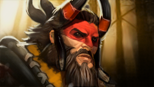
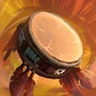

Патч 7.42a
 Summon Ancient Thunderhide
Summon Ancient Thunderhide- НерфБазовое здоровье Thunderhide снижено с 2200 до 10 −5%
- НерфБазовое сопротивление магии Thunderhide снижено с 35% до 3% −14%
- НерфДлительность замедления Slam снижена с 4 сек (3 сек для героев) до 0.1 сек
Призывает зверей к себе на помощь

Pis`master Wild Axes
Wild Axes
 Summon Razorback
Summon Razorback Summon Raptors
Summon Raptors
 Primal RoarSummon Ancient Thunderhide
Primal RoarSummon Ancient Thunderhideесть изменения в последних патчах, нажмите, чтобы перейти к ним
Summon Ancient Thunderhide Drums of SlomWild AxesSummon RaptorsSummon Ancient Thunderhide
Drums of SlomWild AxesSummon RaptorsSummon Ancient ThunderhideПризывает Ancient Thunderhide, который сражается вместе с Beastmaster. Это крип-герой: пока предыдущий жив и получал урон в последние 3 сек, призвать нового нельзя.
 Slam
SlamТопает по земле три раза. Каждая следующая волна меньше, враги получают магический урон и замедляются. Длительность 4 сек (3 сек для героев).

Thunderhide DrumПассивная аура. Каждая атака Thunderhide, Beastmaster или его юнитов в радиусе даёт стак: +1% к максимальному здоровью и базовому урону. Без атак стаки теряются по одному в секунду.